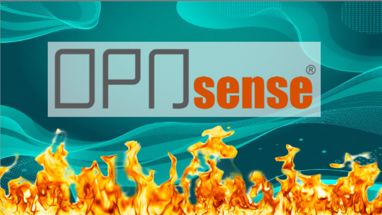

01Guia do Firewall OPNSense
Nunca foi tão fácil explorar uma nova ferramenta de Firewall!
Aulas em português
CONHECIMENTO QUE VIRA PRÁTICA
Aprenda virtualização, firewall e alta disponibilidade com cursos que conectam conhecimento técnico à prática. Desenvolva a confiança para dar o próximo passo.
QUEM APRENDE, CONTA
Experiências de alunos que levaram o conhecimento para o dia a dia. Depoimentos originais em português.
Excelente o curso, vai direto ao ponto sem enrolação.
Excelente o curso, vai direto ao ponto sem enrolação.
Curso incrível! O professor domina muito o assunto, muito bem explicado, tudo no curso funciona corretamente. Já fiz outros cursos de OPNSense e esse é o melhor.
Curso incrível! O professor domina muito o assunto, muito bem explicado, tudo no curso funciona corretamente. Já fiz outros cursos de OPNSense e esse é o melhor.
Está superando, pois as funções que vão além do que esperava, como VPN e outras funções do firewall que podem servir para uso pessoal na rede. Boa didática e separação dos módulos. Foi o melhor investimento até agora em 2026.
Está superando, pois as funções que vão além do que esperava, como VPN e outras funções do firewall que podem servir para uso pessoal na rede. Boa didática e separação dos módulos. Foi o melhor investimento até agora em 2026.
Quero deixar aqui meu agradecimento sincero pelas aulas sobre Proxmox. O conteúdo foi simplesmente excelente — muito bem estruturado, didático, claro e, acima de tudo, atualizado com os recursos mais recentes da plataforma. Graças a essas aulas, consegui…
Ler depoimento completo
Quero deixar aqui meu agradecimento sincero pelas aulas sobre Proxmox. O conteúdo foi simplesmente excelente — muito bem estruturado, didático, claro e, acima de tudo, atualizado com os recursos mais recentes da plataforma. Graças a essas aulas, consegui compreender todas as capacidades e possibilidades que o Proxmox oferece, desde a virtualização com KVM até o uso de containers, snapshots, alta disponibilidade, ZFS, gerenciamento em cluster e muito mais. Ferramentas que antes pareciam complexas agora fazem parte do meu dia a dia com muito mais segurança e confiança. Parabéns pelo trabalho de qualidade e pelo jeito direto e acessível de ensinar. Aprender sobre virtualização com Proxmox nunca foi tão claro! Muito obrigado!
Quero deixar aqui meu agradecimento sincero pelas aulas sobre Proxmox. O conteúdo foi simplesmente excelente — muito bem estruturado, didático, claro e, acima de tudo, atualizado com os recursos mais recentes da plataforma. Graças a essas aulas, consegui compreender todas as capacidades e possibilidades que o Proxmox oferece, desde a virtualização com KVM até o uso de containers, snapshots, alta disponibilidade, ZFS, gerenciamento em cluster e muito mais. Ferramentas que antes pareciam complexas agora fazem parte do meu dia a dia com muito mais segurança e confiança. Parabéns pelo trabalho de qualidade e pelo jeito direto e acessível de ensinar. Aprender sobre virtualização com Proxmox nunca foi tão claro! Muito obrigado!
O curso era o que eu precisava. Voltado à prática e simula problemas que acontecem em ambiente de produção. Parabéns ao instrutor!
O curso era o que eu precisava. Voltado à prática e simula problemas que acontecem em ambiente de produção. Parabéns ao instrutor!
Aprendi bastante com o curso, muito bem explicado e muita mão na massa.
Aprendi bastante com o curso, muito bem explicado e muita mão na massa.